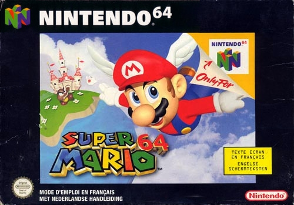

Un jour, le royaume Champignon fut envahi par les Koopas, une tribu de tortues reconnues pour leur magie
noire. Les calmes et pacifiques habitants du royaume furent transformés en pierres, en briques et même en
plantes! Le royaume est tombé en ruines!
La seule capable de briser le sort est la princesse Toadstool, la fille du roi Champignon. Malheureusement,
elle est détenue par le méchant roi Bowser.
Mario, qui a découvert la tragédie que vivent les habitants du royaume Champignon, décide de sauver la
princesse de l'emprise des Koopas et de rétablir l'ordre.
Vous êtes Mario! À vous de sauver les habitants du royaume Champignon de la magie noire des Koopas!
Mario Licence Phares De Nintendo
Avec les succès de Donkey Kong en 1981 puis de Mario Bros. en 1983, Mario devient une véritable
mascotte pour Nintendo. Il fera son apparition dans plus de deux cents jeux vidéo, parfois très éloignés du
concept original. On le verra entre autres dans de nombreux jeux de sport (golf et tennis avant tout), de
puzzles, de courses et de combats. Néanmoins Mario aura toujours droit à un ou plusieurs épisodes avec un
gameplay de jeu de plates-forme plus ou moins proche des titres qui ont lancé la série. Vu la popularité du
personnage, Nintendo mise souvent sur son petit plombier moustachu pour soutenir ses consoles.
En raison
de la grande popularité du personnage et du coût nécessaire pour créer et faire connaitre de nouveaux
personnages, Nintendo utilise de la licence Mario dans plusieurs licences, et le plombier fera son apparition
dans de nombreux jeux où il fera office de personnage principal ou secondaire, jouable la plupart du temps.

-
Super Mario 64 
-
Super Mario Sunshine
-
Super Mario Kart

-
Super Smash Bros Melée